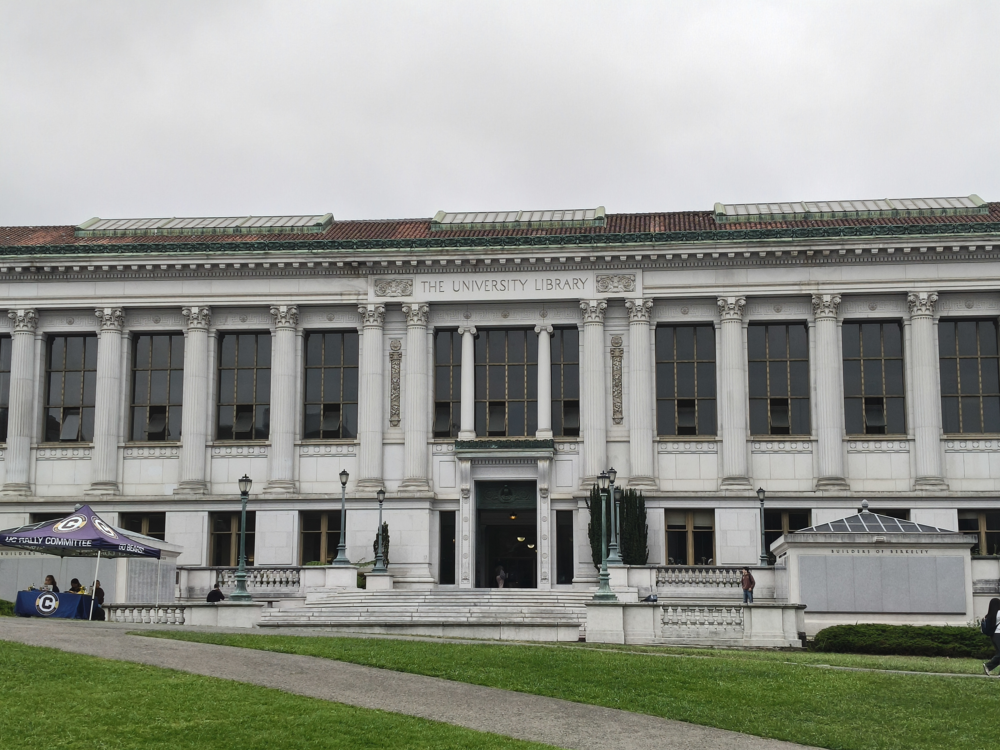

UC Berkeley · CS180/280A: Intro to Computer Vision and Computational Photography
Becoming Friends with Your Camera
In this project, we want you to become friends with every pixel. The first step toward this goal is to become friends with your camera—e.g., the one in your smartphone. In particular, the goal of this project is to get you some intuitive understanding of the somewhat subtle relationship between perspective, focal length/zoom, and the center of projection.
Architectural Perspective Compression
The Dolly Zoom
Part 1
Selfie: The Wrong Way vs. The Right Way
We begin with a distorted selfie and then re-shoot from a farther distance while zooming in, so the subject remains the same size in both frames. The key idea is to isolate how focal length and framing shape depth cues.


Part 2
Architectural Perspective Compression
This experiment repeats the same viewpoint comparison for an urban scene. A zoomed far-shot appears flattened, while the closer capture preserves stronger perspective and contrast in the building geometry.

Part 3
The Dolly Zoom
The final demonstration highlights how changing camera position and focal length affects the perception of shape, depth, and compression across a sequence of frames.